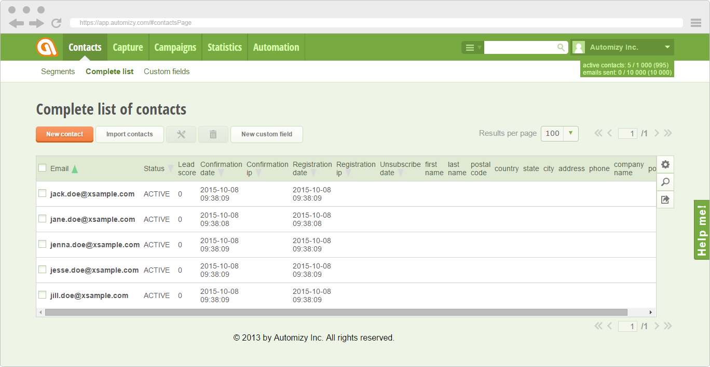

What is AutomizyJs?
AutomizyJs is a jQuery UI-like GUI and widget collection, that provides you with several features which will make coding way faster for you.
AutomizyJs takes you to a whole new level of web application development
With AutomizyJs you will be able to create complete applications, by creating simple objects, or calling short methods. You only have to define the bases, AutomizyJs will make the rest of the work.
Whether you plan to build a complex, interactive web app, or you just want to insert a widget to your webpage, AutomizyJs will give you a helping hand.
As reference we built
Automizy, our professional marketing automation software using AutomizyJs and
AutomizyJs API, and as you see the result is quite spectacular:

Create complete web application without writing a single line of HTML code
All AutomizyJs modules can be created by defining a simple object, which stores basic data like a title for a dialog, label for inputs, or event on click for buttons.
var dialog = $A.newDialog({
title: 'Import contacts',
buttons: [
{skin: 'nobox-green',text: 'Cancel',float: 'left',click: function(){dialog.close();}},
{skin: 'simple-orange',text: 'Next',float: 'right'}
],
content: $A.newForm({
inputs: [
{label: 'Import file',type: 'file'},
{label: 'Add to segment',type: 'select',multiselect: $A.d.defines.input.setupSelectObj,
options:[[0, '--- Nothing ---'],[12, 'First Segment'],[15, 'Second Segment']]
},
{label: 'Email',validator: 'email'}
]
})
}).draw();
Use method chaining, and your code will be as easy to read like a novel
If you think writing objects will ruin your code, you can also use method chaining for setting up the modules. Either way you like, you will find a ton of examples for each module, so you can choose the best fitting method for yourself.
var dialog = $A.newDialog().title('Import contacts').buttons([
$A.newButton().skin('nobox-green').text('Cancel').float('left').click(function(){dialog.close();}),
$A.newButton().skin('simple-orange').text('Next').float('right')
]).content($A.newForm().addInputs([
$A.newInput().label('Import file').type('file'),
$A.newInput().label('Add to segment').type('select').multiselect($A.d.defines.input.setupSelectObj).options([
[0, '--- Nothing ---'],[12, 'First Segment'],[15, 'Second Segment']
]),
$A.newInput().label('Email').validator('email')
])).draw();
Easy to combine with other JavaScript APIs
AutomizyJs can use all jQuery methods, so you won't have any troubles with integrating.